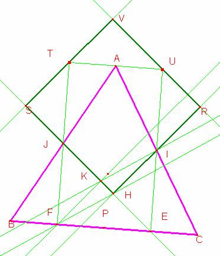
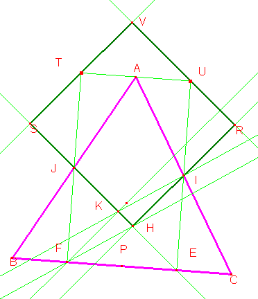

Para el aula
Problema 287
ABC es un triángulo equilátero. I, J y P son los puntos medios de sus lados. Se parte CB en cuatro partes iguales según los puntos E (medio de CP), P y F(medio de PB).
Sea H la proyección ortogonal de I sobre EJ y K la proyección ortogonal de F sobre EJ.
Sea R el simétrico de H en relación al punto I , S el simétrico de K en relación al punto J, U el simétrico de E en relación a I, y T el simétrico de F en relación a J.
Las rectas RU y TS se cortan en V.
UAT, ¿están alineados?
RVSH, ¿es un cuadrado?
Clapponi, P. (1997): Découpage dans un triangle. Petit X 34,pag 54. [Clapponi es un seudónimo de Philippe Clarou - Bernard Capponi].
Solución de Ricardo Barroso Campos. Didáctica de las Matemáticas. Universidad de Sevilla .
|
 |
El triángulo AUI es simétrico del CEI luego ے IUA ے = ICE=60 Por el mismo motivo es ے FAT ے = JBF=60 Luego es: ے TAJ IAJ ے + IUA ے+ =180 Por lo que T, A y U Están alineados
|
Observemos el triángulo rectángulo EFJ. Sea 2a el lado de ABC.
Es FE=a. FJ =1/2 PA, es la mitad de la altura de ABC.

Es FE=a.
Es FJ =1/2 PA, es la mitad de la altura de ABC.
Luego es
El triángulo EJF y el IEH son rectángulos y semejantes, por lo que sus lados son proporcionales, de donde se tiene que:
, por lo que es
Luego es .
Además al ser el triángulo FKJ congruente con el IHE, es KJ=HE, por lo que
es: .
Así HS y HR son de distinta medida, y RVSH no es cuadrado, sino rectángulo.